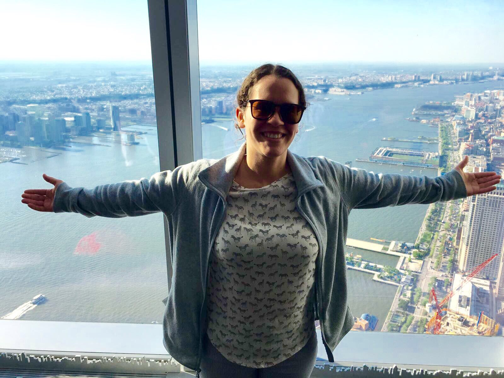
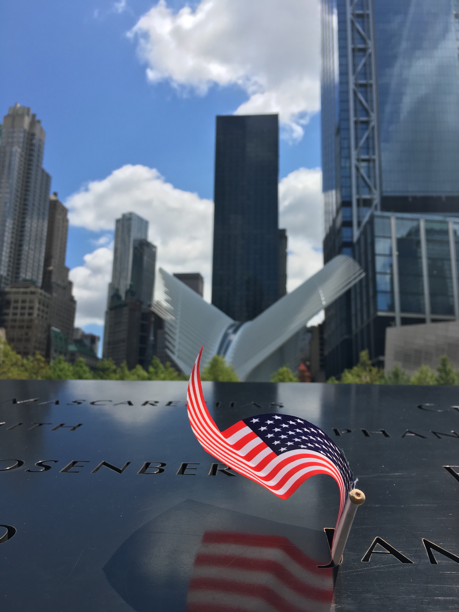
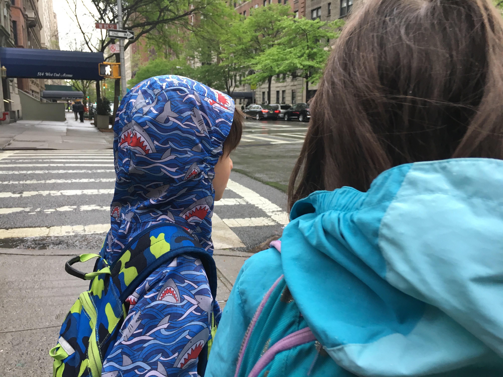
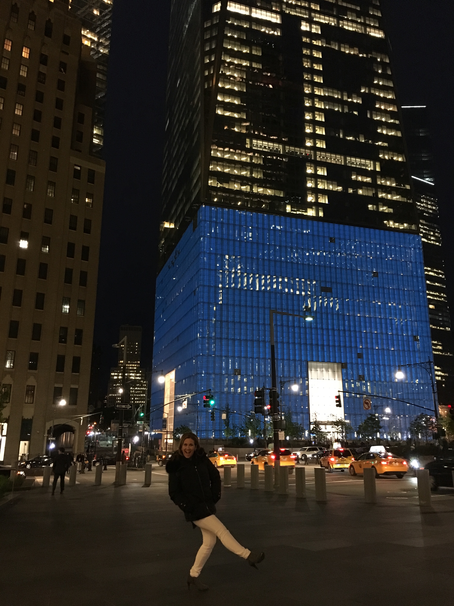

a life apart from school, work, and code

i travel
When I'm not in my room or the library studying or finishing up a programming project, I'm outside. I take advantage of the gracious program Columbia has with over 20 museums, including the Intrepid, to visit and learn a bit about art and history (topics that I rarely see in a classroom due to my choice of studies). During school breaks, I enjoy going back home, because I live where you vacation so I might as well join you. Top: Visiting the 100th floor of the Freedom Tower


i photograph
I don't really go out with the sole purpose of taking photographs. It's more like a spontaneous hobby that I really enjoy. Whenever I see a good photo op, I take out my phone and I snatch a picture. I don't take more than two minutes to take the photo. I do look forward to buying a sorta-professional camera to store my memories in a more long-lasting way. Top: Pictures of the WTC Memoriali love cats
Hey, guess what? I really think I'm a cat sometimes. For starters, I can jump pretty high considering my height of just 4' 11" and I really like to sleep. So, am I cat or what? This does not mean I do not like dogs. Don't take me wrong, because I also really like dogs. Top: Cats just being cats

i babysit
If you're not a morning person, I understand, because I'm not either, but these kids really make it worth it. Every morning I wake up at 7, just to take these two personalities to school. I'm glad to be an influence in their lives, as much as they are in mine. They make me laugh, while I keep them safe. It also helps me keep my meals on track so I can't really complain. Top: the kiddos

i give back
If you don't do it for the self-gratitude, what do you do it for? I love giving back: to my family, to my community, to my friends, and to strangers. Life is not about having everything, but about doing something with what you have. For me, my mom has given me the most and more than I have ever deserved so I try to give her back as much as I can while not going broke. I donate to charity, to HRC, to Susan G. Komen, and other organizations that influence my life because you never know when you will need as others need now. Top: Mom being mom
Design by TEMPLATED.